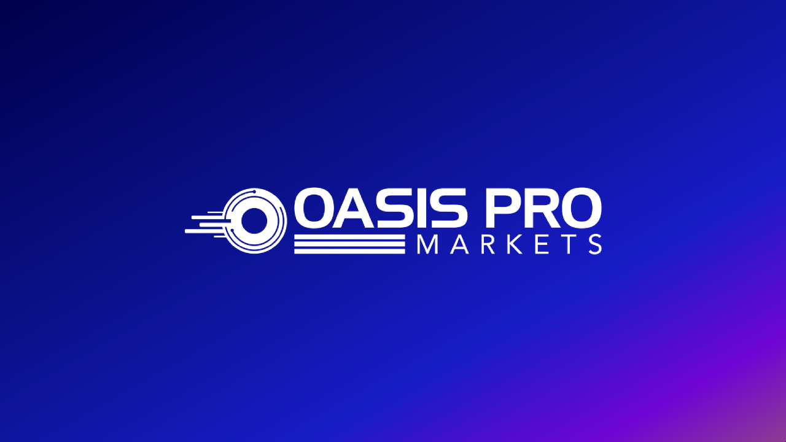
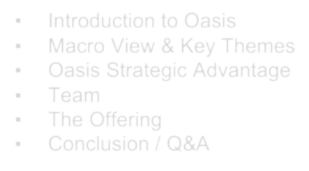

Next >
Jul-2021
This document does not constitute an offer to sell or a solicitation of an offer to purchase securities. The recipient of this document is deemed to have agreed not to (i) reproduce or distribute this document and (ii) disclose any information contained in this document without the consent of the authors.


▪
▪
▪
▪
▪
▪
Introduction to Oasis
Macro View & Key Themes Oasis Strategic Advantage Team
The Offering
Conclusion / Q&A
▪ Oasis Pro Markets’ mission, as a full-service investment bank, is to bridge the world of traditional finance and decentralized finance, “DeFi”, and to become the leading platform for the trading of public and private multi-asset digital securities globally.• “I’m totally open to having certain applications that can be done more efficiently without intermediaries. But the intermediaries in many respects do serve an important function, and we can hold them accountable…Apart from the legality issue, in my view it is untenable to allow an unregulated, unlicensed derivatives market to compete, side-by-side, with a fully regulated and licensed derivatives market. In addition to the absence of market safeguards and customer protections in the unregulated market, it is unfair to impose the obligations, restrictions, and costs of regulation upon some market participants while permitting their unregulated competitors to operate wholly free of such obligations, restrictions, and costs.”Oasis Pro Markets is the world’s first Alternative Trading System (ATS) authorized to trade Digital Securities using Digital Cash.DeFi Collateralization▪ Full-service Investment Bank▪ Multi-Asset Alternative Trading System (ATS) Registered Broker Dealer operating an approved Alternative Trading System for Digital Securities. The first ATS approved to trade digital cash (e.g. stablecoins and centrally backed digital stablecoins) versus digital securities, equity and fixed income.= Immediate Settlement.Smart Contract Benefits▪ For Issuers:▪ For Investors► Private markets have raised ~$2.9T in capital, resulting in ~$100m annualized trading volume► We expect significant cost reductions from current ~$54B in annual clearing & settlements andStreamlined onboarding for accredited and institutional investorsOur digital onboarding process reduces the complexity of opening accounts for our subscribers.Key Advantage to Accredited Investors▪ Oasis overseas the entire lifecycle of each tradeOasis Pro Markets is a Founding Member of ConsortiumThe Executive Advisory Board (EAB) was formed to drive and implement solutions to accelerate settlement times in the private markets.Pat LaVecchiaCEO/Co-Chairman/Co-OwnerBob YostpilleEvangelos TzoulafisVP, ATS Technical ServicesAkash PatelChristopher SuttonDirector, Blockchain ServicesChristopher HebelCompliance OfficerRevenue Estimates($mm)Oasis Pro Markets’ mission is to bridge the world of traditional finance and decentralized finance, “DeFi”, and to become the leading platform for the trading of digital securities globally.
Next >